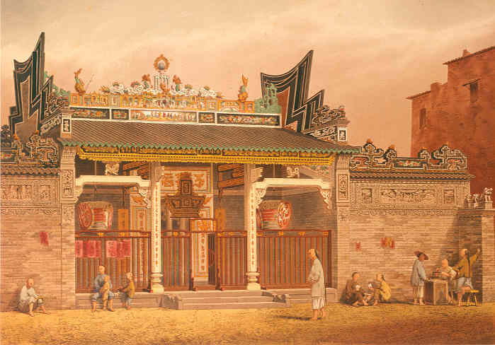

概述

位於澳門十月初五街的康眞君廟，是一間典型的道教廟宇，其所在地段原是內港北灣灘涂之地，為保佑內港區商民催吉避凶，安居樂業，通過華商和居民的募捐集資一万三千七百九十一两，於1857年開始填築新土地及興建康真君廟，至1860年冬天落成開光，由當時富紳王祿(王元禧)主祭；該建築面寬18.14米，总進深为27.62米，占地約502平方米。廟宇建成後都由歷屆值理會負責舉行祭祀和維修保養、也曾提供義學和社會救濟等工作；1984年被評定為紀念物，1993年文化司署文化財產廳對康真君廟進行了基本的維護工程，2000年文化局委托華南理工大學程建軍教授進行詳細的測繪及制定修復方案，2001年進行大規模修復工程；當時在多方協調下，拆去原在廟門左右的構築物，使整座廟宇重現原貌。有關康真君的身份以及廟內各路神仙的詳細來歷，推薦各位購買三聯書店剛出版的《澳門康真君廟》！
詳情
據說由於當時該地民居經常失火，居民飽受其苦。風水先生認為要消除火患，要建一廟宇，以作鎮壓。恰好廣東發生水災，從西江隨水飄浮而至一座木頭康王神像，居民將之拾起，於附近建祠供奉；及至清咸豐年間(1851～1861)，由該區坊眾集資建廟，擴建成現在的規模。
廟內供奉康公真君，即漢代之李烈，因保國有功，受封為康公。康公像左邊是南海廣利洪聖大王，右為西山金聖候王，偏殿前為六祖聖佛，後為漢代神醫華陀先師。
該廟專主民間喜慶法事，殿前中央放置有 “酒船石”，於清咸豐年間(1851~1874年)雕刻而成，該石專給善男信女禮拜時奠酒之用，故名；並有船隻、鯉躍龍門、龍鳳呈祥及松延年等吉祥圖案。
廟內曾設有義學，培育貧苦學生，惜於後來停辦。以往該廟每年亦搭棚請戲班上演神功戲，惟近年亦停辦。
康公廟空間的設計，是通過一庭院將各主體互相聯繫一起，具中國南方建築的特點。在廟頂的大部分地方，有用多色赤陶製成的薄浮雕檐壁。
康公廟是最早由澳門文化司署策劃修復的廟宇之一，工程於1992年進行，除廟頂外，還包括粉飾和修復所有的牆壁，裝飾物、木器、門窗框架等，也修復舊有的壁畫。
康公廟，創建於咸豐十年（1860年）。在澳門眾多廟宇中，從歷史源流、建築規模以至社會影響力來說，康公廟都不算突出，但因其坐落的內港地區乃19世紀中葉後澳門逐漸發展起來的繁華地帶，故作為區內地標建築，康公廟的創建發展及以其為中心的社區生活，從側面反映了晚清以來澳門華人社會的面貌。
推廣
《澳門康真君廟》透過文獻的搜集與整理，為讀者提供一幅康真君廟發展的歷史圖像。該書作者黃文輝，寫作人、攝影師、澳門文史研究者。已出版詩集、散文集、評論集多種，最新著作為《儂家正住蓮花地——澳門歷史建築文化解碼》。
“澳門知識叢書”自推出至今已出版44冊，涵蓋範圍包括人文歷史、宗教、藝術、經濟等範疇，是以弘揚澳門鄉土文化為目的之簡易讀物。《澳門康真君廟》定價45澳門元，本澳各大書店均有代售。